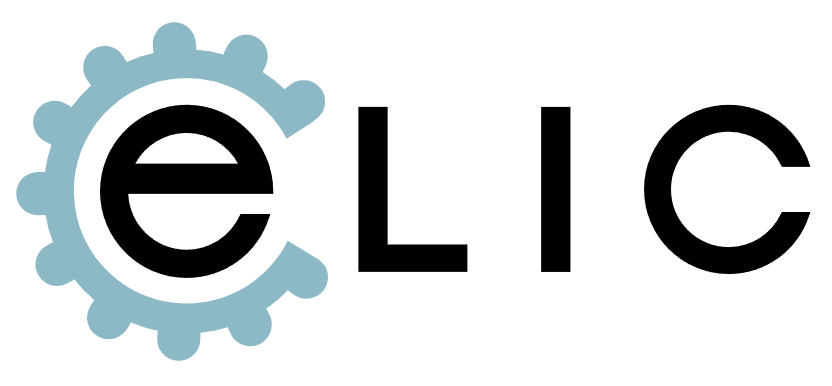
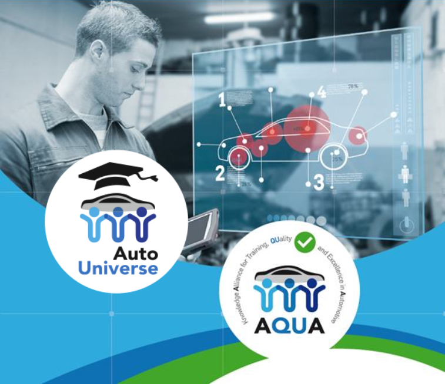
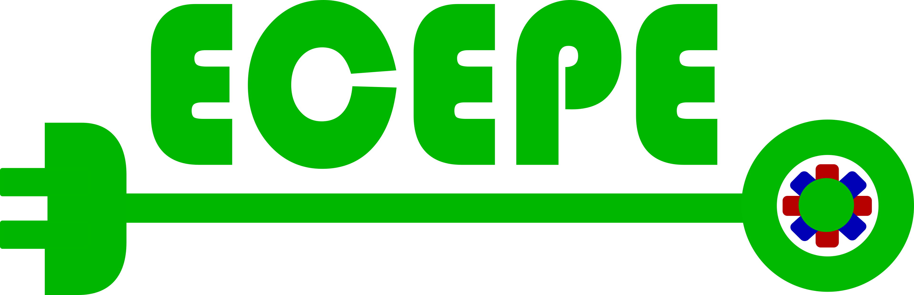
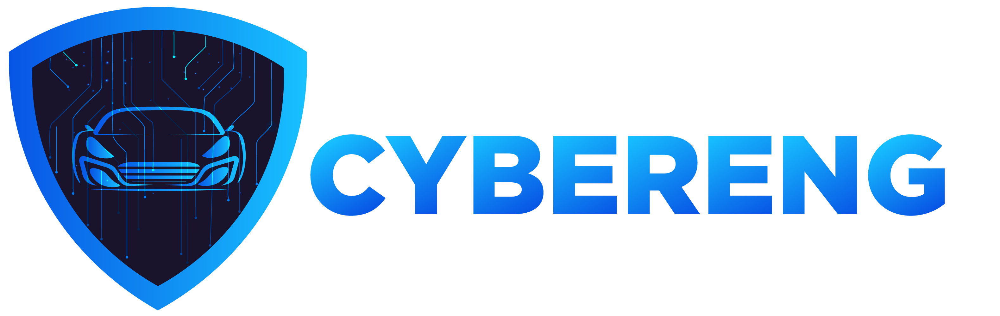
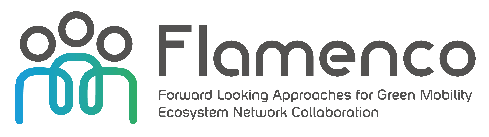
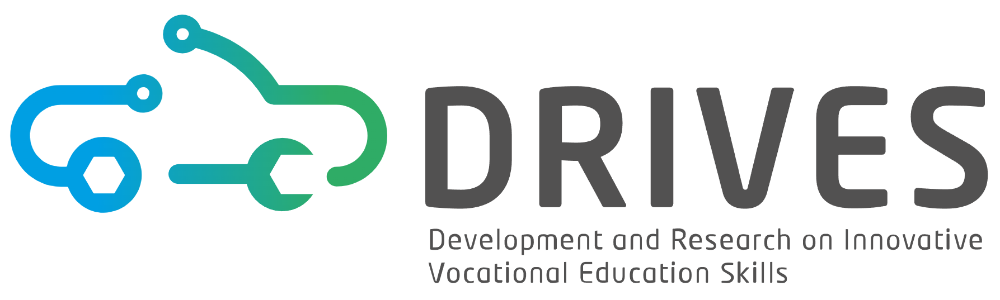
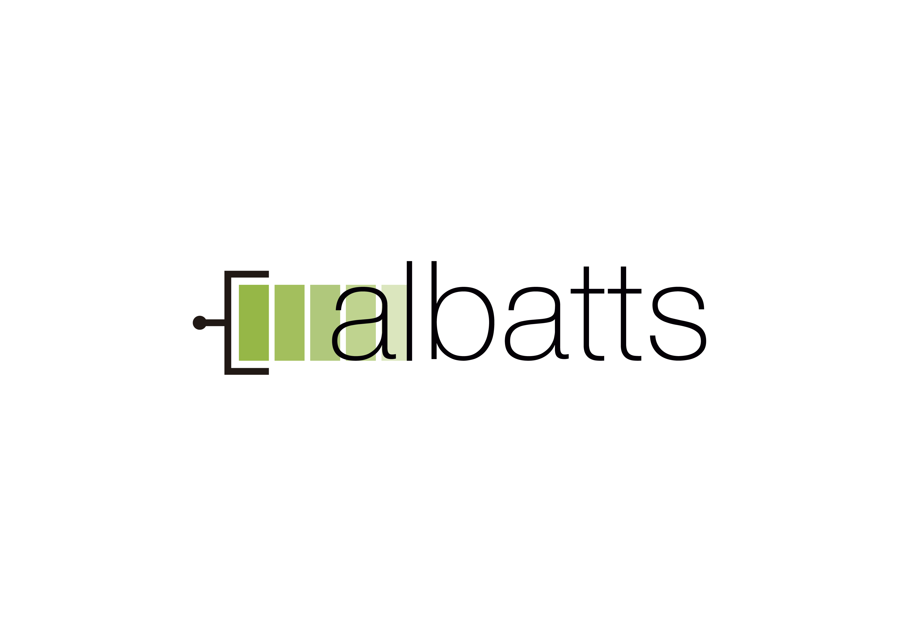
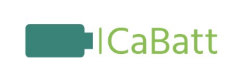
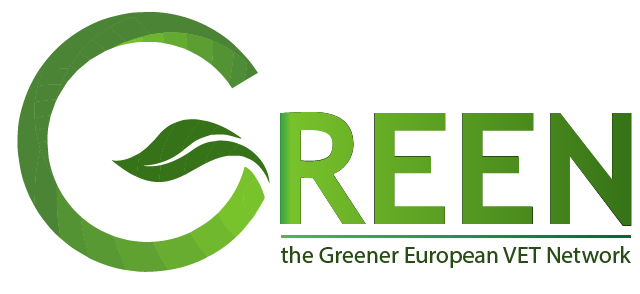
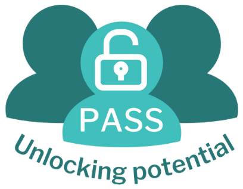

TRIREME
DurationMar 2024 – Feb 2028

International Collaboration
Selected running and finalized projects from the SkillsTech Lab international collaboration portfolio.
Portfolio
ERASMUS+ Blueprint Projects, Horizon Europe, and Just Transition Fund Mechanism. Project periods are shown from ASA and official project information where available.


Portfolio
Selected finalized projects from the lab portfolio.










Návrh strategického rámce vysokoškolského vzdělávání pro sektor automotive
VSB – Technical University of Ostrava was the project solver; MŠMT and MPO were implementation partners.
Strategic collaboration